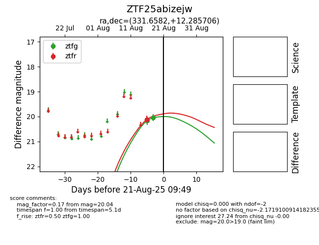

Target ZTF25abizejw at 2025-08-21 09:49, see:
FINK: fink-portal.org/ZTF25abizejw
Lasair: lasair-ztf.lsst.ac.uk/objects/ZTF25abizejw
ALeRCE: alerce.online/object/ZTF25abizejw
alt names
ZTF25abizejw (ztf,alerce)
coordinates:
equatorial (ra, dec) = (331.6582,+12.28571)
galactic (l, b) = (72.1147,-33.86682)
photometry
last ztfg=20.04, ztfr=20.12
2 ztfg, 1 ztfr detections
